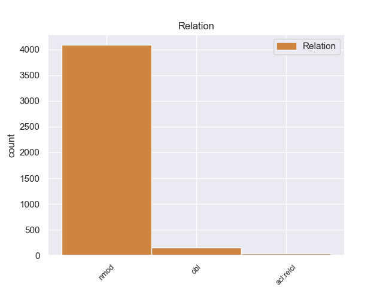
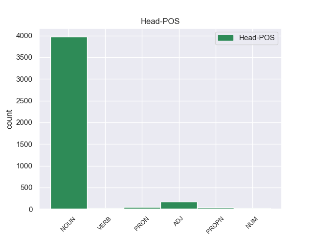
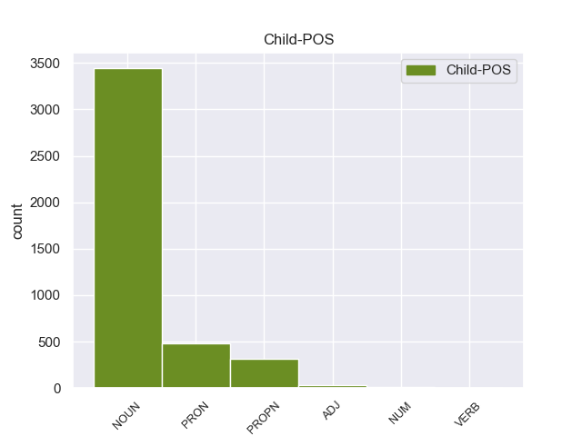

Distribution of features within this leaf



Agreement Rules sorted by frequency.
- When the dependent token is the nominal modifier(nmod) of the head token,
1 Επιτρέψτε _ _ _ _ 0 _ _ _
2 μου _ _ _ _ 0 _ _ _
3 τώρα _ _ _ _ 0 _ _ _
4 να _ _ _ _ 0 _ _ _
5 κάνω _ _ _ _ 0 _ _ _
6 μερικές _ _ _ _ 0 _ _ _
7 παρατηρήσεις _ _ _ _ 0 _ _ _
8 σ _ _ _ _ 0 _ _ _
9 το _ _ _ _ 0 _ _ _
10 ζήτημα _ _ _ _ 0 _ _ _
11 της _ _ _ _ 0 _ _ _
12 δήλωσης δήλωση NOUN NOUN Case=Gen|Gender=Fem|Number=Sing 0 _ _ _
13 αξιοπιστίας αξιοπιστία NOUN NOUN Case=Gen|Gender=Fem|Number=Sing 12 nmod _ _
14 καθότι _ _ _ _ 0 _ _ _
15 το _ _ _ _ 0 _ _ _
16 ζήτημα _ _ _ _ 0 _ _ _
17 αυτό _ _ _ _ 0 _ _ _
18 αναφέρεται _ _ _ _ 0 _ _ _
19 σ _ _ _ _ 0 _ _ _
20 την _ _ _ _ 0 _ _ _
21 έκθεση _ _ _ _ 0 _ _ _
22 παρακολούθησης _ _ _ _ 0 _ _ _
23 . _ _ _ _ 0 _ _ _
1 Εξαιτίας _ _ _ _ 0 _ _ _
2 του _ _ _ _ 0 _ _ _
3 , _ _ _ _ 0 _ _ _
4 όπως _ _ _ _ 0 _ _ _
5 έχει _ _ _ _ 0 _ _ _
6 οριστεί _ _ _ _ 0 _ _ _
7 , _ _ _ _ 0 _ _ _
8 κινεζικού _ _ _ _ 0 _ _ _
9 απαρτχάιντ _ _ _ _ 0 _ _ _
10 , _ _ _ _ 0 _ _ _
11 οι _ _ _ _ 0 _ _ _
12 Θιβετιανοί _ _ _ _ 0 _ _ _
13 έχουν _ _ _ _ 0 _ _ _
14 σήμερα _ _ _ _ 0 _ _ _
15 χαμηλότερο χαμηλός ADJ ADJ Case=Acc|Degree=Cmp|Gender=Neut|Number=Sing 0 _ _ _
16 προσδόκιμο _ _ _ _ 0 _ _ _
17 ζωής _ _ _ _ 0 _ _ _
18 , _ _ _ _ 0 _ _ _
19 ποσοστό _ _ _ _ 0 _ _ _
20 αλφαβητισμού _ _ _ _ 0 _ _ _
21 , _ _ _ _ 0 _ _ _
22 και _ _ _ _ 0 _ _ _
23 κατά _ _ _ _ 0 _ _ _
24 κεφαλή _ _ _ _ 0 _ _ _
25 εισόδημα _ _ _ _ 0 _ _ _
26 από _ _ _ _ 0 _ _ _
27 τους _ _ _ _ 0 _ _ _
28 Κινέζους _ _ _ _ 0 _ _ _
29 αποίκους άποικος NOUN NOUN Case=Acc|Gender=Masc|Number=Plur 15 obl _ _
30 του _ _ _ _ 0 _ _ _
31 Θιβέτ _ _ _ _ 0 _ _ _
32 . _ _ _ _ 0 _ _ _
1 Το _ _ _ _ 0 _ _ _
2 εστιακό _ _ _ _ 0 _ _ _
3 βάθος _ _ _ _ 0 _ _ _
4 της _ _ _ _ 0 _ _ _
5 δόνησης _ _ _ _ 0 _ _ _
6 υπολογίστηκε _ _ _ _ 0 _ _ _
7 σ _ _ _ _ 0 _ _ _
8 τα _ _ _ _ 0 _ _ _
9 5 _ _ _ _ 0 _ _ _
10 χιλιόμετρα _ _ _ _ 0 _ _ _
11 , _ _ _ _ 0 _ _ _
12 προκαλώντας _ _ _ _ 0 _ _ _
13 την _ _ _ _ 0 _ _ _
14 κατάρρευση _ _ _ _ 0 _ _ _
15 των _ _ _ _ 0 _ _ _
16 περισσοτέρων _ _ _ _ 0 _ _ _
17 μεσαιωνικών _ _ _ _ 0 _ _ _
18 κτισμάτων _ _ _ _ 0 _ _ _
19 σ _ _ _ _ 0 _ _ _
20 το _ _ _ _ 0 _ _ _
21 κέντρο _ _ _ _ 0 _ _ _
22 της _ _ _ _ 0 _ _ _
23 πόλης _ _ _ _ 0 _ _ _
24 , _ _ _ _ 0 _ _ _
25 αλλά _ _ _ _ 0 _ _ _
26 και _ _ _ _ 0 _ _ _
27 κτιρίων κτίριο NOUN NOUN Case=Gen|Gender=Neut|Number=Plur 0 _ _ _
28 που _ _ _ _ 0 _ _ _
29 ήταν _ _ _ _ 0 _ _ _
30 νεότατης _ _ _ _ 0 _ _ _
31 κατασκευής κατασκευή NOUN NOUN Case=Gen|Gender=Fem|Number=Sing 27 acl:relcl _ _
32 σ _ _ _ _ 0 _ _ _
33 τα _ _ _ _ 0 _ _ _
34 περίχωρα _ _ _ _ 0 _ _ _
35 και _ _ _ _ 0 _ _ _
36 σ _ _ _ _ 0 _ _ _
37 τα _ _ _ _ 0 _ _ _
38 γειτονικά _ _ _ _ 0 _ _ _
39 χωριά _ _ _ _ 0 _ _ _
40 . _ _ _ _ 0 _ _ _
Disagree Examples:
1 Η _ _ _ _ 0 _ _ _
2 Επιτροπή επιτροπή NOUN NOUN Case=Nom|Gender=Fem|Number=Sing 0 _ _ _
3 σ _ _ _ _ 0 _ _ _
4 την _ _ _ _ 0 _ _ _
5 πραγματικότητα πραγματικότητα NOUN NOUN Case=Acc|Gender=Fem|Number=Sing 2 nmod _ _
6 δεν _ _ _ _ 0 _ _ _
7 αποτελεί _ _ _ _ 0 _ _ _
8 σήμερα _ _ _ _ 0 _ _ _
9 ευρωπαϊκή _ _ _ _ 0 _ _ _
10 κυβέρνηση _ _ _ _ 0 _ _ _
11 . _ _ _ _ 0 _ _ _
1 Έχω _ _ _ _ 0 _ _ _
2 επίσης _ _ _ _ 0 _ _ _
3 την _ _ _ _ 0 _ _ _
4 εντύπωση _ _ _ _ 0 _ _ _
5 ότι _ _ _ _ 0 _ _ _
6 και _ _ _ _ 0 _ _ _
7 άλλες _ _ _ _ 0 _ _ _
8 πολιτικές _ _ _ _ 0 _ _ _
9 ομάδες _ _ _ _ 0 _ _ _
10 σ _ _ _ _ 0 _ _ _
11 την _ _ _ _ 0 _ _ _
12 Επιτροπή επιτροπή NOUN NOUN Case=Acc|Gender=Fem|Number=Sing 0 _ _ _
13 Εξωτερικών _ _ _ _ 0 _ _ _
14 Υποθέσεων υπόθεση NOUN NOUN Case=Gen|Gender=Fem|Number=Plur 12 nmod _ _
15 είναι _ _ _ _ 0 _ _ _
16 της _ _ _ _ 0 _ _ _
17 ίδιας _ _ _ _ 0 _ _ _
18 άποψης _ _ _ _ 0 _ _ _
19 . _ _ _ _ 0 _ _ _
1 Έχω _ _ _ _ 0 _ _ _
2 επίσης _ _ _ _ 0 _ _ _
3 την _ _ _ _ 0 _ _ _
4 εντύπωση _ _ _ _ 0 _ _ _
5 ότι _ _ _ _ 0 _ _ _
6 και _ _ _ _ 0 _ _ _
7 άλλες _ _ _ _ 0 _ _ _
8 πολιτικές _ _ _ _ 0 _ _ _
9 ομάδες _ _ _ _ 0 _ _ _
10 σ _ _ _ _ 0 _ _ _
11 την _ _ _ _ 0 _ _ _
12 Επιτροπή επιτροπή NOUN NOUN Case=Acc|Gender=Fem|Number=Sing 0 _ _ _
13 Εξωτερικών _ _ _ _ 0 _ _ _
14 Υποθέσεων _ _ _ _ 0 _ _ _
15 είναι _ _ _ _ 0 _ _ _
16 της _ _ _ _ 0 _ _ _
17 ίδιας _ _ _ _ 0 _ _ _
18 άποψης άποψη NOUN NOUN Case=Gen|Gender=Fem|Number=Sing 12 nmod _ SpaceAfter=No
19 . _ _ _ _ 0 _ _ _
1 Μοιάζει _ _ _ _ 0 _ _ _
2 ειρωνεία _ _ _ _ 0 _ _ _
3 τέτοια _ _ _ _ 0 _ _ _
4 δήλωση _ _ _ _ 0 _ _ _
5 να _ _ _ _ 0 _ _ _
6 προέρχεται _ _ _ _ 0 _ _ _
7 από _ _ _ _ 0 _ _ _
8 αυτόν _ _ _ _ 0 _ _ _
9 τον _ _ _ _ 0 _ _ _
10 άνθρωπο _ _ _ _ 0 _ _ _
11 , _ _ _ _ 0 _ _ _
12 αλλά _ _ _ _ 0 _ _ _
13 η _ _ _ _ 0 _ _ _
14 αλήθεια _ _ _ _ 0 _ _ _
15 είναι _ _ _ _ 0 _ _ _
16 ότι _ _ _ _ 0 _ _ _
17 όντως _ _ _ _ 0 _ _ _
18 την _ _ _ _ 0 _ _ _
19 έκανε _ _ _ _ 0 _ _ _
20 και _ _ _ _ 0 _ _ _
21 εγώ _ _ _ _ 0 _ _ _
22 ο _ _ _ _ 0 _ _ _
23 ίδιος _ _ _ _ 0 _ _ _
24 είχα _ _ _ _ 0 _ _ _
25 την _ _ _ _ 0 _ _ _
26 ευκαιρία _ _ _ _ 0 _ _ _
27 να _ _ _ _ 0 _ _ _
28 την _ _ _ _ 0 _ _ _
29 ακούσω _ _ _ _ 0 _ _ _
30 και _ _ _ _ 0 _ _ _
31 δεν _ _ _ _ 0 _ _ _
32 νομίζω _ _ _ _ 0 _ _ _
33 ότι _ _ _ _ 0 _ _ _
34 απέχει _ _ _ _ 0 _ _ _
35 πάρα _ _ _ _ 0 _ _ _
36 πολύ _ _ _ _ 0 _ _ _
37 από _ _ _ _ 0 _ _ _
38 την _ _ _ _ 0 _ _ _
39 σημερινή _ _ _ _ 0 _ _ _
40 πραγματικότητα _ _ _ _ 0 _ _ _
41 , _ _ _ _ 0 _ _ _
42 κάτι _ _ _ _ 0 _ _ _
43 που _ _ _ _ 0 _ _ _
44 με _ _ _ _ 0 _ _ _
45 οδηγεί _ _ _ _ 0 _ _ _
46 να _ _ _ _ 0 _ _ _
47 δηλώσω _ _ _ _ 0 _ _ _
48 την _ _ _ _ 0 _ _ _
49 αναγκαιότητα αναγκαιότητα NOUN NOUN Case=Acc|Gender=Fem|Number=Sing 0 _ _ _
50 αναθεώρησης αναθεώρηση NOUN NOUN Case=Gen|Gender=Fem|Number=Sing 49 nmod _ _
51 και _ _ _ _ 0 _ _ _
52 τοποθέτησης _ _ _ _ 0 _ _ _
53 σε _ _ _ _ 0 _ _ _
54 νέες _ _ _ _ 0 _ _ _
55 βάσεις _ _ _ _ 0 _ _ _
56 των _ _ _ _ 0 _ _ _
57 σχέσεων _ _ _ _ 0 _ _ _
58 μεταξύ _ _ _ _ 0 _ _ _
59 βορρά _ _ _ _ 0 _ _ _
60 και _ _ _ _ 0 _ _ _
61 νότου _ _ _ _ 0 _ _ _
62 , _ _ _ _ 0 _ _ _
63 δηλαδή _ _ _ _ 0 _ _ _
64 την _ _ _ _ 0 _ _ _
65 ανάγκη _ _ _ _ 0 _ _ _
66 αναθεώρησης _ _ _ _ 0 _ _ _
67 του _ _ _ _ 0 _ _ _
68 ρόλου _ _ _ _ 0 _ _ _
69 της _ _ _ _ 0 _ _ _
70 Ευρωπαϊκής _ _ _ _ 0 _ _ _
71 Ένωσης _ _ _ _ 0 _ _ _
72 σε _ _ _ _ 0 _ _ _
73 αυτό _ _ _ _ 0 _ _ _
74 το _ _ _ _ 0 _ _ _
75 πλαίσιο _ _ _ _ 0 _ _ _
76 , _ _ _ _ 0 _ _ _
77 εφόσον _ _ _ _ 0 _ _ _
78 είναι _ _ _ _ 0 _ _ _
79 βέβαιο _ _ _ _ 0 _ _ _
80 ότι _ _ _ _ 0 _ _ _
81 η _ _ _ _ 0 _ _ _
82 προώθηση _ _ _ _ 0 _ _ _
83 μίας _ _ _ _ 0 _ _ _
84 νέας _ _ _ _ 0 _ _ _
85 παγκόσμιας _ _ _ _ 0 _ _ _
86 τάξης _ _ _ _ 0 _ _ _
87 δικαιότερης _ _ _ _ 0 _ _ _
88 , _ _ _ _ 0 _ _ _
89 αξιοκρατικότερης _ _ _ _ 0 _ _ _
90 δεν _ _ _ _ 0 _ _ _
91 μπορεί _ _ _ _ 0 _ _ _
92 ούτε _ _ _ _ 0 _ _ _
93 πρέπει _ _ _ _ 0 _ _ _
94 να _ _ _ _ 0 _ _ _
95 πάψει _ _ _ _ 0 _ _ _
96 να _ _ _ _ 0 _ _ _
97 αποτελεί _ _ _ _ 0 _ _ _
98 στρατηγικό _ _ _ _ 0 _ _ _
99 στόχο _ _ _ _ 0 _ _ _
100 της _ _ _ _ 0 _ _ _
101 Ένωσης _ _ _ _ 0 _ _ _
102 . _ _ _ _ 0 _ _ _
1 Μοιάζει _ _ _ _ 0 _ _ _
2 ειρωνεία _ _ _ _ 0 _ _ _
3 τέτοια _ _ _ _ 0 _ _ _
4 δήλωση _ _ _ _ 0 _ _ _
5 να _ _ _ _ 0 _ _ _
6 προέρχεται _ _ _ _ 0 _ _ _
7 από _ _ _ _ 0 _ _ _
8 αυτόν _ _ _ _ 0 _ _ _
9 τον _ _ _ _ 0 _ _ _
10 άνθρωπο _ _ _ _ 0 _ _ _
11 , _ _ _ _ 0 _ _ _
12 αλλά _ _ _ _ 0 _ _ _
13 η _ _ _ _ 0 _ _ _
14 αλήθεια _ _ _ _ 0 _ _ _
15 είναι _ _ _ _ 0 _ _ _
16 ότι _ _ _ _ 0 _ _ _
17 όντως _ _ _ _ 0 _ _ _
18 την _ _ _ _ 0 _ _ _
19 έκανε _ _ _ _ 0 _ _ _
20 και _ _ _ _ 0 _ _ _
21 εγώ _ _ _ _ 0 _ _ _
22 ο _ _ _ _ 0 _ _ _
23 ίδιος _ _ _ _ 0 _ _ _
24 είχα _ _ _ _ 0 _ _ _
25 την _ _ _ _ 0 _ _ _
26 ευκαιρία _ _ _ _ 0 _ _ _
27 να _ _ _ _ 0 _ _ _
28 την _ _ _ _ 0 _ _ _
29 ακούσω _ _ _ _ 0 _ _ _
30 και _ _ _ _ 0 _ _ _
31 δεν _ _ _ _ 0 _ _ _
32 νομίζω _ _ _ _ 0 _ _ _
33 ότι _ _ _ _ 0 _ _ _
34 απέχει _ _ _ _ 0 _ _ _
35 πάρα _ _ _ _ 0 _ _ _
36 πολύ _ _ _ _ 0 _ _ _
37 από _ _ _ _ 0 _ _ _
38 την _ _ _ _ 0 _ _ _
39 σημερινή _ _ _ _ 0 _ _ _
40 πραγματικότητα _ _ _ _ 0 _ _ _
41 , _ _ _ _ 0 _ _ _
42 κάτι _ _ _ _ 0 _ _ _
43 που _ _ _ _ 0 _ _ _
44 με _ _ _ _ 0 _ _ _
45 οδηγεί _ _ _ _ 0 _ _ _
46 να _ _ _ _ 0 _ _ _
47 δηλώσω _ _ _ _ 0 _ _ _
48 την _ _ _ _ 0 _ _ _
49 αναγκαιότητα _ _ _ _ 0 _ _ _
50 αναθεώρησης _ _ _ _ 0 _ _ _
51 και _ _ _ _ 0 _ _ _
52 τοποθέτησης _ _ _ _ 0 _ _ _
53 σε _ _ _ _ 0 _ _ _
54 νέες _ _ _ _ 0 _ _ _
55 βάσεις βάση NOUN NOUN Case=Acc|Gender=Fem|Number=Plur 0 _ _ _
56 των _ _ _ _ 0 _ _ _
57 σχέσεων σχέση NOUN NOUN Case=Gen|Gender=Fem|Number=Plur 55 nmod _ _
58 μεταξύ _ _ _ _ 0 _ _ _
59 βορρά _ _ _ _ 0 _ _ _
60 και _ _ _ _ 0 _ _ _
61 νότου _ _ _ _ 0 _ _ _
62 , _ _ _ _ 0 _ _ _
63 δηλαδή _ _ _ _ 0 _ _ _
64 την _ _ _ _ 0 _ _ _
65 ανάγκη _ _ _ _ 0 _ _ _
66 αναθεώρησης _ _ _ _ 0 _ _ _
67 του _ _ _ _ 0 _ _ _
68 ρόλου _ _ _ _ 0 _ _ _
69 της _ _ _ _ 0 _ _ _
70 Ευρωπαϊκής _ _ _ _ 0 _ _ _
71 Ένωσης _ _ _ _ 0 _ _ _
72 σε _ _ _ _ 0 _ _ _
73 αυτό _ _ _ _ 0 _ _ _
74 το _ _ _ _ 0 _ _ _
75 πλαίσιο _ _ _ _ 0 _ _ _
76 , _ _ _ _ 0 _ _ _
77 εφόσον _ _ _ _ 0 _ _ _
78 είναι _ _ _ _ 0 _ _ _
79 βέβαιο _ _ _ _ 0 _ _ _
80 ότι _ _ _ _ 0 _ _ _
81 η _ _ _ _ 0 _ _ _
82 προώθηση _ _ _ _ 0 _ _ _
83 μίας _ _ _ _ 0 _ _ _
84 νέας _ _ _ _ 0 _ _ _
85 παγκόσμιας _ _ _ _ 0 _ _ _
86 τάξης _ _ _ _ 0 _ _ _
87 δικαιότερης _ _ _ _ 0 _ _ _
88 , _ _ _ _ 0 _ _ _
89 αξιοκρατικότερης _ _ _ _ 0 _ _ _
90 δεν _ _ _ _ 0 _ _ _
91 μπορεί _ _ _ _ 0 _ _ _
92 ούτε _ _ _ _ 0 _ _ _
93 πρέπει _ _ _ _ 0 _ _ _
94 να _ _ _ _ 0 _ _ _
95 πάψει _ _ _ _ 0 _ _ _
96 να _ _ _ _ 0 _ _ _
97 αποτελεί _ _ _ _ 0 _ _ _
98 στρατηγικό _ _ _ _ 0 _ _ _
99 στόχο _ _ _ _ 0 _ _ _
100 της _ _ _ _ 0 _ _ _
101 Ένωσης _ _ _ _ 0 _ _ _
102 . _ _ _ _ 0 _ _ _